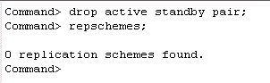

To remove an existing active standby pair configuration, you must stop the replication agents and drop the active standby pair replication scheme on each database.
This tutorial uses the DSNs repdb1_1211 and repdb2_1211. The hostnames of the two machines are tthost1 and tthost2. repdb2_1211 is the current active database on tthost2, and repdb1_1211 on tthost1 is the standby database.
1. Stop the Replication Agent
On tthost1, use ttIsql to connect to repdb1_1211 as the replication administrator adm.
ttIsql
connect "dsn=repdb1_1211;uid=adm";
Use the built-in procedure ttRepStop to stop the replication agent.
call ttrepstop;
Repeat the above steps for repdb2_1211 on tthost2.
2. Remove the Active Standby Scheme
On tthost1, connect to the repdb1_1211 database and remove the active standby pair schema by using the DROP ACTIVE STANDBY PAIR statement. Use the ttIsql command repschemes to verify that the replication scheme has been removed.
drop active standby pair;
repschemes;
Repeat the above step for repdb2_1211 on tthost2.
3. Destroy the Standby Database
Log in to tthost1 as the instance administrator. Use the ttDestroy utility to remove the redundant standby database repdb1_1211.
ttdestroy repdb1_1211
For more information on Altering replication and Dropping a replication scheme refer to the documentation here